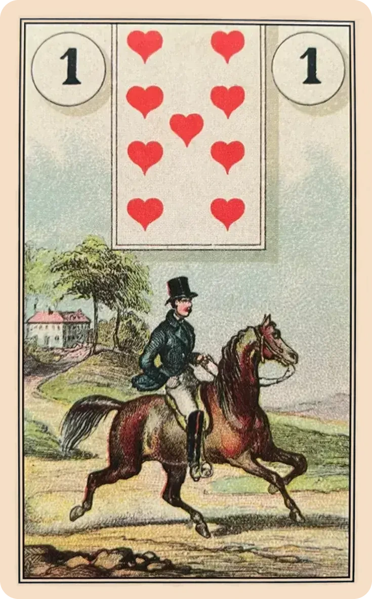

Oracle IA Personnalisé
Posez une question sur l'Amour, les Affaires ou un sujet Général. L'Oracle IA relie vos cartes dans une lecture riche et bienveillante.
Consultez votre Carte du Jour, réalisez des tirages du Petit Lenormand, explorez la signification des 36 cartes et recevez des lectures personnalisées de l'Oracle IA pour l'Amour, les Affaires ou le quotidien.
Concentrez-vous sur une question ou une intention puis touchez la carte pour révéler son message symbolique.
Conçue pour offrir sérénité, lisibilité et profondeur aussi bien pour une réflexion quotidienne que pour l'étude des cartes.
Posez une question sur l'Amour, les Affaires ou un sujet Général. L'Oracle IA relie vos cartes dans une lecture riche et bienveillante.
Révélez une carte dédiée à votre journée et activez un rappel quotidien optionnel pour prendre un instant pour vous.
Parcourez la galerie complète ou le mode carrousel et consultez les interprétations détaillées de chaque symbole.
Personnalisez vos tirages avec le nouveau Jeu Zen Japonais (Sumi-e), Or Mystique, Forêt Enchantée, Céleste, Rose Vintage et plus encore.
Consultez cartes et significations même sans connexion internet. Vos tirages restent sur votre appareil sans compte obligatoire.
Créez de jolies images de vos cartes à partager et profitez d'une interface soignée en Français, Portugais, Anglais, Espagnol, Italien et Allemand.
Découvrez des illustrations soignées pour faciliter l'intuition et comparez les différents styles de jeux disponibles dans l'application.

01 · Le Chevalier Nouvelles & Élan 05 · L’Arbre
Santé & Racines
05 · L’Arbre
Santé & Racines
 24 · Le Cœur
Affection & Joie
24 · Le Cœur
Affection & Joie
 25 · L’Anneau
Union & Accords
25 · L’Anneau
Union & Accords
 31 · Le Soleil
Clarté & Réussite
31 · Le Soleil
Clarté & Réussite
 33 · La Clé
Réponses & Solutions
33 · La Clé
Réponses & Solutions
Rejoignez plus de 10 000 utilisateurs qui consultent le Petit Lenormand chaque jour pour nourrir leur intuition et leur réflexion.